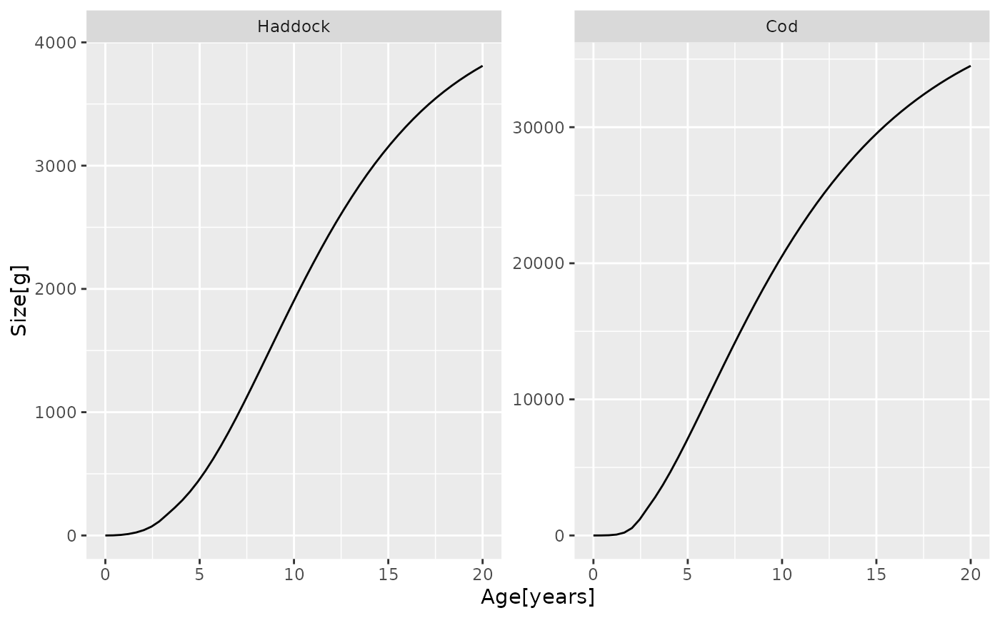

Get growth curves giving weight as a function of age
Arguments
- object
MizerSim or MizerParams object. If given a MizerSim object, uses the growth rates at the final time of a simulation to calculate the size at age. If given a MizerParams object, uses the initial growth rates instead.
- species
The species to be selected. Optional. By default all target species are selected. A vector of species names, or a numeric vector with the species indices, or a logical vector indicating for each species whether it is to be selected (TRUE) or not.
- max_age
The age up to which to run the growth curve. Default is 20.
- percentage
Boolean value. If TRUE, the size is given as a percentage of the maximal size.
See also
Other summary functions:
getBiomass(),
getDiet(),
getN(),
getSSB(),
getYieldGear(),
getYield()
Examples
growth_curves <- getGrowthCurves(NS_params, species = c("Cod", "Haddock"))
str(growth_curves)
#> num [1:2, 1:50] 0.001 0.001 0.87 2.546 4.499 ...
#> - attr(*, "dimnames")=List of 2
#> ..$ Species: chr [1:2] "Haddock" "Cod"
#> ..$ Age : chr [1:50] "0" "0.408163265306122" "0.816326530612245" "1.22448979591837" ...
library(ggplot2)
#> Warning: package 'ggplot2' was built under R version 4.2.2
ggplot(melt(growth_curves)) +
geom_line(aes(Age, value)) +
facet_wrap(~ Species, scales = "free") +
ylab("Size[g]") + xlab("Age[years]")
